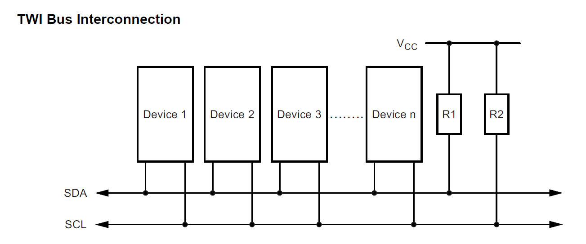
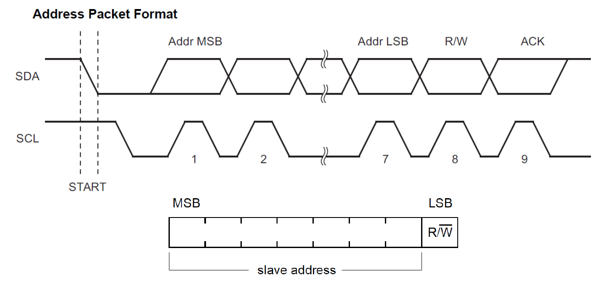
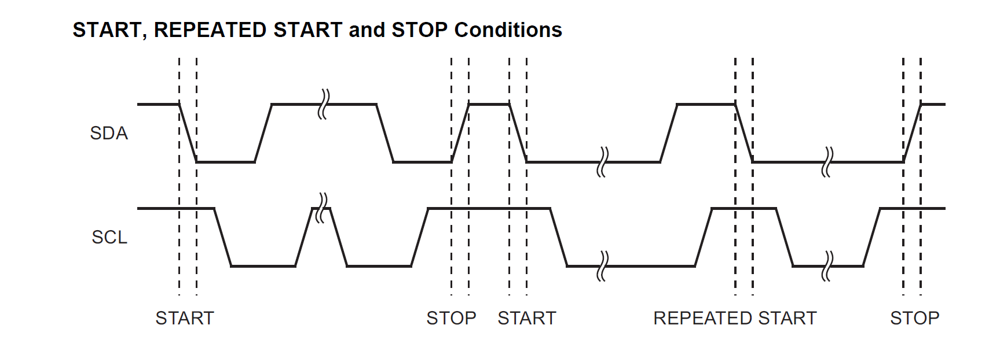
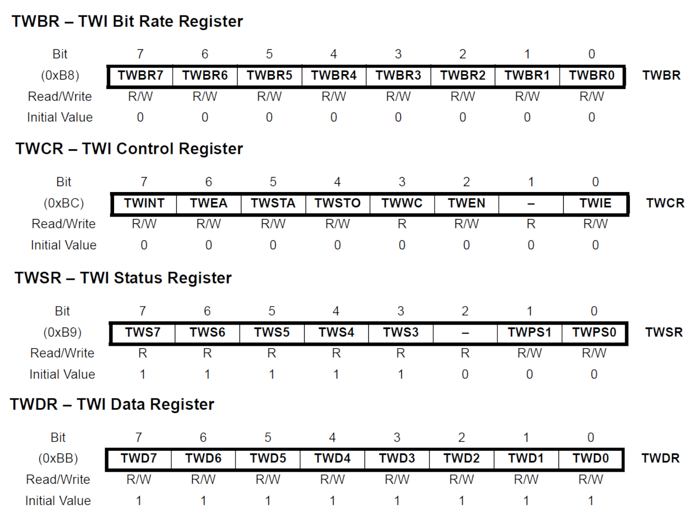
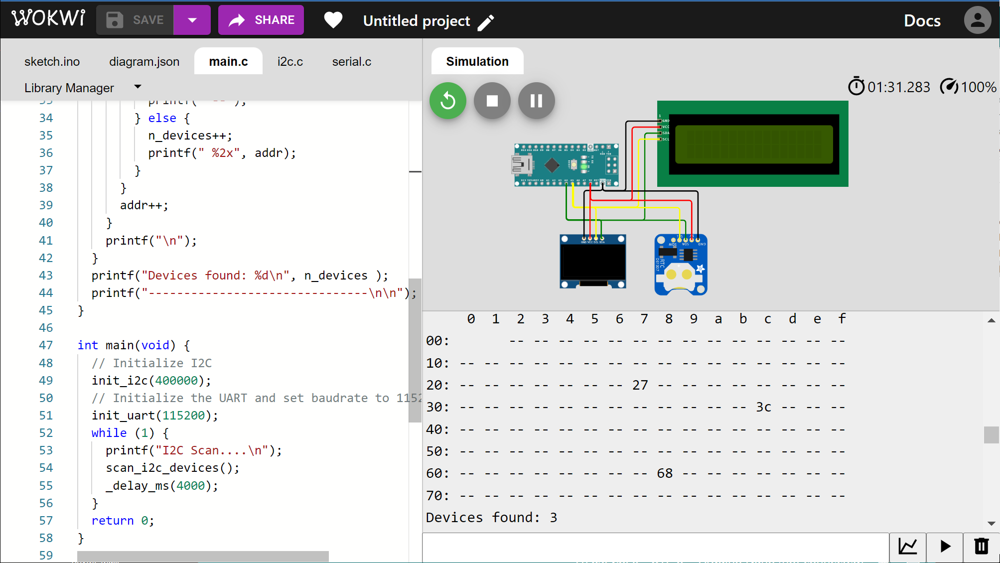
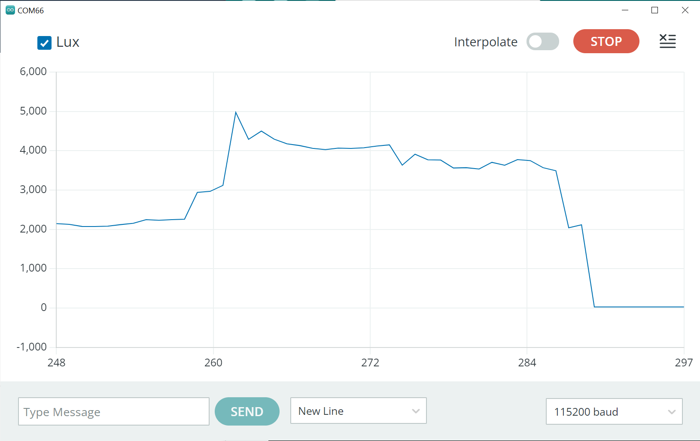
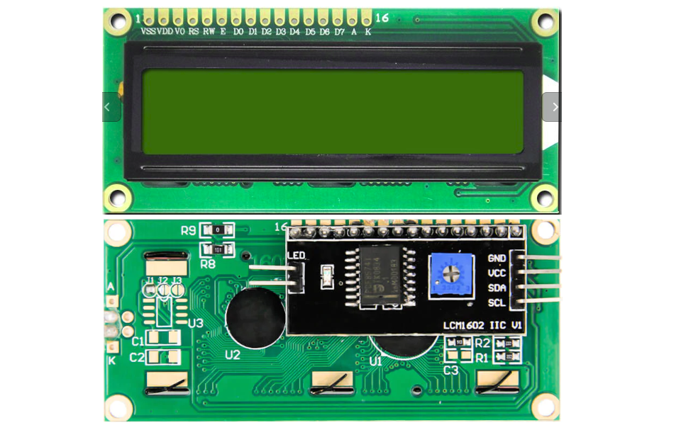
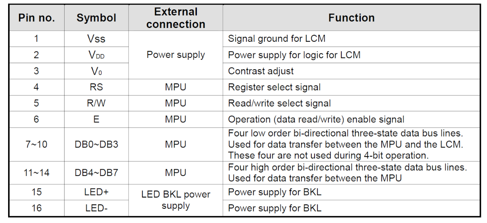
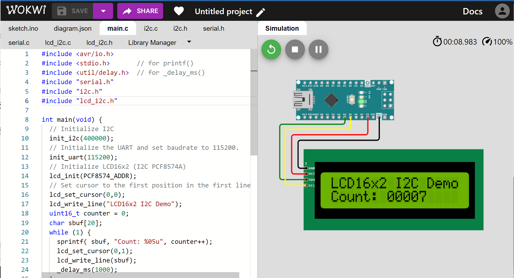

การเขียนโปรแกรมภาษา C สำหรับ AVR (ATmega328P): ตอนที่ 5#
Keywords: Atmel AVR MCU, ATmega328P, Bare-metal C Programming, AVR-GCC, avr-libc
▷ การเขียนโปรแกรมภาษา C แบบ Bare-Metal และการใช้ไลบรารี avr-libc#
บทความในตอนที่ 5 สาธิตตัวอย่างการเขียนโค้ดภาษา C เพื่อใช้งานวงจรที่เรียกว่า Two-Wire Serial Interface (TWI) ภายในชิป ATmega328P มีการใช้คำสั่งหรือฟังก์ชันของไลบรารี avr-libc (Online User Manual) และใช้ Wokwi Simulator ในการจำลองการทำงานของโค้ดเพื่อตรวจสอบความถูกต้องในเบื้องต้น
คำแนะนำ: ถ้าจะลองโค้ดตัวอย่างโดยใช้ Arduino IDE เพื่อคอมไพล์และอัปโหลดไปยังบอร์ดทดลอง Arduino Uno
หรือ Nano ให้สร้าง Arduino Sketch และทำให้ไฟล์ .ino ไม่มีโค้ดใด ๆ (Empty Sketch)
และให้สร้างไฟล์ main.c เพื่อเขียนโค้ด
▷ I2C (Inter-Integrated Circuit Bus)#
I2C Bus (อ่านว่า "ไอ-สแควร์-ซี-บัส") เป็นโพรโทคอลสำหรับการสื่อสารข้อมูลดิจิทัล ใช้สัญญาณดิจิทัลสำหรับ I/O เพียง 2 เส้น คือ SCL (Serial Clock)เป็นสัญญาณนาฬิกาเพื่อกำหนดจังหวะในการทำงานในการรับส่งข้อมูล และ SDA (Serial Data) เป็นสัญญาณสำหรับข้อมูลหนึ่งบิต และสัญญาณแต่ละเส้นจะต้องมีตัวต้านทาน Pullup ต่ออยู่ด้วย
ระบบบัส I2C ประกอบด้วยอุปกรณ์ที่ทำหน้าที่เป็นมาสเตอร์ (Master) หรือ ตัวควบคุม (Controller) และอุปกรณ์ที่ทำหน้าที่เป็นสเลฟ (Slave) หรืออุปกรณ์ที่คอยสื่อสารข้อมูลกับมาสเตอร์ในระบบบัสเดียวกัน (เหมือนกรณีของบัส SPI) อุปกรณ์หลายประเภท เช่น ไอซีเซนเซอร์ จะทำหน้าที่เป็นสเลฟเท่านั้น แต่ไมโครคอนโทรลเลอร์สามารถเขียนโปรแกรมให้ทำงานได้เป็นมาสเตอร์ หรือสเลฟก็ได้

รูป: ตัวอย่างระบบบัส I2C ที่มีอุปกรณ์หลายตัวเชื่อมต่อเข้าด้วยกันด้วยสัญญาณ SDA และ SCL (Source: Atmel)
การทำงานของอุปกรณ์ในระบบบัส I2C แบ่งได้ตามหน้าที่ดังนี้
- Master หรือ Slave: อุปกรณ์ทำหน้าที่เป็นมาสเตอร์หรือสเลฟ
- Transmitter หรือ Receiver: อุปกรณ์เป็นตัวส่งข้อมูลหรือตัวรับข้อมูล
โดยทั่วไป ชิปไมโครคอนโทรลเลอร์รองรับการใช้งานบัส I2C และแบ่งรูปแบบการทำงานในแต่ละช่วงเวลาได้เป็น 4 โหมด
- Master Transmitter (MT) เป็นมาสเตอร์และเขียนข้อมูลเพื่อส่งไปยังสเลฟ
- Master Receiver (MR) เป็นมาสเตอร์และขอข้อมูลจากสเลฟ
- Slave Transmitter (ST) เป็นสเลฟและรอให้มาสเตอร์มาขอข้อมูลแล้วส่งออกไป
- Slave Receiver (SR) เป็นสเลฟและรอให้มาสเตอร์ส่งข้อมูลมาแล้วคอยรับ
ในการสื่อสารระหว่างมาสเตอร์และสเลฟ ต้องมีการกำหนดแอดเดรสของอุปกรณ์ (Device Address) เพื่อระบุว่ามาสเตอร์จะสื่อสารกับสเลฟตัวใดในระบบบัส โดยทั่วไปจะใช้แอดเดรสแบบ 7 บิต (7-bit Address) ซึ่งใช้ระบุได้ถึง 128 อุปกรณ์ที่แตกต่างกัน และแอดเดรสของอุปกรณ์สเลฟแต่ละตัวในบัส I2C เดียวกันจะต้องไม่ซ้ำกัน

รูป: ข้อมูลไบต์แรกที่ถูกส่งออกไปโดยมาสเตอร์ เป็นตัวระบุแอดเดรส 7 บิตของอุปกรณ์ (สเลฟ) และมีบิต R/W (Source: Atmel)
มาสเตอร์เริ่มต้นเข้าใช้บัส I2C ด้วยการสร้างสัญญาณเริ่มต้นที่เรียกว่า Start Condition และจะต้องปิดท้ายด้วยสัญญาณหยุดที่เรียกว่า Stop Condition เมื่อมาสเตอร์ส่งสัญญาณเริ่มต้นแล้ว จะส่งไบต์แรกซึ่งประกอบด้วยแอดเดรสขนาด 7 บิต ของอุปกรณ์สเลฟ และอีกหนึ่งบิตในตำแหน่ง LSB ที่ระบุว่า จะเขียนหรืออ่านข้อมูลถัดไป หรือเรียกว่า บิต R/W Operation (Read/Not-Write Bit: 1=Read, 0=Write)

รูป: การเปลี่ยนแปลงลอจิกของสัญญาณ SDA และ SCL ที่เป็นการเริ่มต้น (Start Condition) และจบการสื่อสาร (Stop Condition) ซึ่งเกิดจากการส่งสัญญาณโดยมาสเตอร์ในระบบบัส I2C (Source: Atmel)
หลังจากได้ส่งข้อมูลหนึ่งไบต์แล้ว อุปกรณ์ที่เป็นตัวส่งข้อมูลจะต้องตรวจสอบดูว่า มีการตอบรับจากอุปกรณ์อีกฝ่ายหนึ่งหรือไม่ โดยการอ่านสัญญาณบิตที่เรียกว่า "บิตตอบรับ"" (Acknowledge Bit) หรือ บิต ACK ซึ่งจะต้องมีค่าเป็น 0 แต่ถ้าไม่มีการตอบรับ จะได้ค่าเป็น 1 (เรียกกรณีนี้ว่า No ACK หรือ NACK) และให้จบการทำงานของมาสเตอร์
เมื่อได้รับหรือส่งข้อมูลครบแล้วและไม่ต้องการใช้บัสอีกต่อไป อุปกรณ์มาสเตอร์จะต้องจบการทำงานโดยการส่งสัญญาณหยุด หรือ Stop Condition แต่ถ้าจะใช้บัสต่อไปอีก (เช่น ในกรณีที่ส่งข้อมูลไบต์ออกไปแล้วตามด้วยการอ่านข้อมูลไบต์จากอุปกรณ์สเลฟ) ให้ส่งสัญญาณเริ่มใหม่อีกครั้ง โดยไม่ต้องส่งสัญญาณ Stop Condition และเรียกกรณีนี้ว่า Repeated Start Condition ซึ่งมีลักษณะเหมือน Start Condition ตามปรกติ จากนั้นให้สื่อสารข้อมูลต่อไปและจบด้วย Stop Condition
▷ การใช้งาน TWI ของ ATmega328P#
ชิป ATmega328P มีวงจรที่เรียกว่า TWI เพียง 1 ชุด สามารถโปรแกรมให้ทำงานเป็นมาสเตอร์หรือสเลฟได้ และใช้ขา PC4/SDA และ PC5/SCL ซึ่งตรงกับขา A4 และ A5 บนบอร์ด Arduino Uno / Nano ตามลำดับ
ความถี่ในการทำงานของบัส I2C มักจะเป็น 100kHz (Standard Mode) หรือ 400kHz (Fast-mode) ในการสื่อสารข้อมูล (สำหรับอุปกรณ์บางชนิด สามารถใช้อัตราสูงกว่า 1MHz)
ข้อสังเกต: บอร์ด Arduino Nano v3.0 และ Uno Rev.3 ไม่มีตัวต้านทาน Pull-Up ที่ขา SCL และ SDA ความถี่ของ SCL ที่ทำงานได้สูงสุดคือ 400kHz
รีจิสเตอร์ขนาด 8 บิต ที่เกี่ยวข้องกับการทำงานของ TWI ในโหมดมาสเตอร์ ได้แก่
TWCR(TWI Control Register) เกี่ยวข้องกับการทำงานของ TWI เช่น- บิต
TWEN(TWI Enable Bit) เขียนค่าบิตเป็น 1 เพื่อเริ่มต้นการทำงานของ TWI - บิต
TWIE(TWI Interrupt Enable Bit) เปิดการใช้งานอินเทอร์รัพท์ - บิต
TWINT(TWI Interrupt Flag) มีไว้เพื่อตรวจสอบค่าบิตที่ระบุว่าเกิดอินเทอร์รัพท์ - บิต
TWSTAและTWSTO(TWI START / STOP Condition Bit) ใช้เพื่อส่งสัญญาณเริ่มต้นหรือสัญญาณจบการใช้งานบัส - บิต
TWEA(TWI Enable Acknowledge Bit)ส่งสัญญาณบิตตอบรับว่าได้รับข้อมูลแล้ว - บิต
TWWC(TWI Write Collison Bit) ระบุว่า มีการเขียนข้อมูลไบต์ลงในTWDAในขณะที่บิตTWINTยังเป็น 0 ซึ่งแสดงว่า ยังอยู่ในระหว่างการทำงานของ TWI (การเขียนข้อมูลไบต์ถัดไปลงในTWDAจะต้องรอให้การส่งข้อมูลไบต์ก่อนหน้าเสร็จก่อน คือ รอให้บิตTWINTมีค่าเป็น 1 และการเขียนค่าบิตเป็น 1 ไปยังบิตTWINTในรีจิสเตอร์ เป็นการเคลียร์บิตดังกล่าว)
- บิต
TWSR(TWI Status Register) สำหรับอ่านค่าบิตสถานะหรือ Status Code (มี 5 บิต) และกำหนดค่า TWI Prescaler (มี 2 บิต สำหรับเลือกค่า1,4,16หรือ64)TWBR(TWI Bit Rate Register) ใช้สำหรับตั้งค่าเพื่อกำหนดความถี่ SCL ของ I2C MasterTWDA(TWI Data Register) สำหรับเขียนหรืออ่านค่าไบต์ข้อมูล

รูป: รายการรีจิสเตอร์ของ TWI สำหรับการทำงานในโหมดมาสเตอร์
การกำหนดค่าความถี่สำหรับ SCL () คำนวณได้ตามสูตรต่อไปนี้
โดยทั่วไป ให้เลือกค่า Prescaler เท่ากับ 1 (ตั้งค่าบิต TWPS[1:0] ในรีจิสเตอร์ TWSR ให้เท่ากับ 00)
และ เท่ากับ 16MHz สำหรับบอร์ด Arduino Uno / Nano
และจะต้องมากกว่า อย่างน้อย 16 เท่า ดังนั้นจะได้ค่าสำหรับ TWBR ดังนี้
ไฟล์ <util/twi.h>
ซึ่งเป็นส่วนหนึ่งของไลบรารี avr-libc สามารถนำเข้ามาใช้เป็น C Header File ได้
เนื่องจากมีการประกาศแมโครหรือค่าคงที่เอาไว้ เช่น
ค่าบิตสำหรับสถานะการทำงานต่าง ๆ ของ TWI แยกตามโหมดการทำงานสำหรับมาสเตอร์และสเลฟ
ตัวอย่างค่าคงที่ (บางส่วน) สำหรับการทำงานของ TWI ในโหมดมาสเตอร์ เช่น
| Macros | Value | Description |
|---|---|---|
TW_START |
0x08 |
start condition transmitted |
TW_REP_START |
0x10 |
repeated start condition transmitted |
TW_MT_SLA_ACK |
0x18 |
SLA+W transmitted, ACK received |
TW_MT_SLA_NACK |
0x20 |
SLA+W transmitted, NACK received |
TW_MT_DATA_ACK |
0x28 |
data transmitted, ACK received |
TW_MT_DATA_NACK |
0x30 |
data transmitted, NACK received |
TW_MR_SLA_ACK |
0x40 |
SLA+R transmitted, ACK received |
TW_MR_SLA_NACK |
0x48 |
SLA+R transmitted, NACK received |
TW_MR_DATA_ACK |
0x50 |
data received, ACK returned |
TW_MR_DATA_NACK |
0x58 |
data received, NACK returned |
ถ้าอุปกรณ์มาสเตอร์ต้องการเขียนข้อมูลไบต์ไปยังอุปกรณ์สเลฟ ก็มีลำดับดังนี้
- ส่งสัญญาณ Start Condition
- ส่งข้อมูลไบต์ที่มีแอดเดรส 7 บิต และบิต R/W มีค่าเป็น 0 (
TW_WRITE) และให้ตรวจสอบบิต ACK เพื่อดูว่า มีอุปกรณ์สเลฟตอบกลับมาหรือไม่ - ส่งข้อมูลไบต์ถัดไป (ถ้ามี) และตรวจสอบบิต ACK จากสเลฟ หลังจากข้อมูลหนึ่งไบต์ได้ถูกส่งออกไป
- ส่งสัญญาณ Stop Condition
ถ้าอุปกรณ์มาสเตอร์ต้องการอ่านข้อมูลไบต์มาจากอุปกรณ์สเลฟ ก็มีลำดับดังนี้
- ส่งสัญญาณ Start Condition
- ส่งข้อมูลไบต์ที่มีแอดเดรส 7 บิต และบิต R/W มีค่าเป็น 1 (
TW_READ) และให้ตรวจสอบบิต ACK เพื่อดูว่า มีอุปกรณ์สเลฟตอบกลับมาหรือไม่ - รับข้อมูลไบต์ทีละไบต์จากอุปกรณ์สเลฟ เมื่อได้รับข้อมูลหนึ่งไบต์แล้วให้ตอบกลับไปด้วยบิต ACK ยกเว้นข้อมูลไบต์สุดท้าย ให้ตอบกลับด้วย NACK
- ส่งสัญญาณ Stop Condition
▷ การสแกนหาอุปกรณ์ (Scanning I2C Devices)#
เมื่อต้องการตรวจสอบดูว่า มีอุปกรณ์สเลฟเชื่อมต่ออยู่หรือไม่ มีหลักการทำงานดังนี้ ให้ลองค่าแอดเดรสในช่วง 0 ถึง 127 ไปทีละค่า และลองส่งไบต์แรกที่ประกอบด้วยแอดเดรส 7 บิต และบิต R/W เมื่อส่งออกไปข้อมูลไบต์แรกออกแล้วมีการตอบกลับมาด้วยบิต ACK แสดงว่ามีอุปกรณ์ที่ตรงกับแอดเดรสดังกล่าว
โค้ดตัวอย่างมีการแบ่งและแยกเก็บในไฟล์ต่าง ๆ ดังนี้
serial.hและserial.cมีฟังก์ชันสำหรับใช้งาน UART เพื่อส่งข้อความไปยังคอมพิวเตอร์ของผู้ใช้โดยใช้ฟังก์ชันprintf()ได้i2c.hและi2c.cมีฟังก์ชันสำหรับการใช้งาน TWI ในโหมด I2C master และเลือกความถี่สำหรับ SCL ได้ เช่น 100kHz หรือ 400kHzmain.cมีฟังก์ชันmain()และscan_i2c_devices()
การทำงานในฟังก์ชัน main() ของตัวอย่างโค้ดเพื่อสแกนหาอุปกรณ์สเลฟในระบบบัส I2C มีลำดับขั้นตอนดังนี้
- เรียกฟังก์ชัน
init_i2c()เพื่อเริ่มต้นใช้งาน TWI (I2C) เพื่อทำให้ชิป ATmega328P ทำงานในโหมดมาสเตอร์ และใช้ความถี่ 400kHz สำหรับ SCL - เรียกฟังก์ชัน
init_uart(115200)เพื่อเริ่มต้นใช้งาน UART และใช้ค่า Baudrate 115200 และสามารถใช้คำสั่งprintf()ส่งข้อความออกทาง Serial/UART ได้ - ทำขั้นตอนซ้ำ เพื่อตรวจสอบแอดเดรสของอุปกรณ์ โดยเรียกฟังก์ชัน
scan_i2c_devices()และหน่วงเวลาไว้ประมาณ 4 วินาที ก่อนทำซ้ำ
ตัวอย่างของโค้ดในไฟล์ main.c มีดังนี้
// File: main.c
#include <avr/io.h>
#include <stdio.h> // for printf()
#include <util/delay.h> // for _delay_ms()
#include "serial.h"
#include "i2c.h"
void scan_i2c_devices(void) {
char sbuf[32];
int n_devices = 0;
printf(" ");
for (uint8_t col = 0; col < 16; col++) {
printf("%3x", col);
}
printf("\n");
uint8_t addr = 0;
for (uint8_t row = 0; row < 8; row++) {
printf("%02x:", row << 4);
for (uint8_t col = 0; col < 16; col++) {
if (row == 0 && addr <= 1) {
printf(" ");
} else {
uint8_t result = i2c_start_transmission(addr << 1);
i2c_end_transmission();
if (result) { // error
printf(" --");
} else {
n_devices++;
printf(" %2x", addr);
}
}
addr++;
}
printf("\n");
}
printf("Devices found: %d\n", n_devices );
printf("-------------------------------\n\n");
}
int main(void) {
// Initialize I2C
init_i2c(400000);
// Initialize the UART and set baudrate to 115200.
init_uart(115200);
while (1) {
printf("I2C Scan....\n");
scan_i2c_devices();
_delay_ms(4000);
}
return 0;
}
เมื่อมีโค้ดตัวอย่างแล้ว ก็สามารถนำไปทดลองใช้กับ Wokwi Simulator ตามรูปตัวอย่างต่อไปนี้ ซึ่งมีการนำบอร์ด Arduino Nano มาต่อกับอุปกรณ์ 3 ชนิด เชื่อมต่อผ่านทางบัส I2C

รูป: ตัวอย่างการจำลองการทำงานเพื่อตรวจสอบแอดเดรสของอุปกรณ์ที่เชื่อมต่อกับบัส I2C
▷ การอ่านจากโมดูลเซนเซอร์ BH1750 Digital Light Sensor#
ไฟล์ที่เกี่ยวข้องได้แก่
โค้ดไฟล์ใน main.c สาธิตการอ่านค่าจากโมดูล BH1750 (I2C)
เพื่อวัดค่าความเข้มแสง ซึ่งมีหมายเลขแอดเดรสเท่ากับ 0x23 การอ่านค่าของไอซี
BH1750 จะใช้คำสั่ง 0x20 เพื่อวัดค่าหนึ่งครั้ง (ไม่ได้เลือกโหมดวัดค่าแบบต่อเนื่อง) แล้วเว้นระยะเวลาก่อนอ่านค่าใหม่
// File: main.c
#include <avr/io.h>
#include <stdio.h> // for printf()
#include <util/delay.h> // for _delay_ms()
#include "serial.h"
#include "i2c.h"
#define BH1750_ADDRESS (0x23)
uint8_t init_bh1750() {
uint8_t result;
// Start I2C transmission for write
result = i2c_start_transmission( (BH1750_ADDRESS << 1) | TW_WRITE);
if ( result ) {
i2c_end_transmission();
printf("BH1750 initialization failed!\n");
return 1; // error
}
i2c_write( 0x01 ); // Send POWER_ON command
// End I2C transmission
i2c_end_transmission();
_delay_ms(150);
printf("BH1750 initialization OK!\n");
return 0;
}
uint8_t bh1750_read( uint16_t *raw_value ) {
uint8_t result;
// Start I2C transmission for write
result = i2c_start_transmission( (BH1750_ADDRESS << 1) | TW_WRITE);
if ( result ) {
i2c_end_transmission();
printf("BH1750: I2C operation failed...!\n");
return 1; // error
}
// Send command to initiate single measurement with 1.0x resolution
i2c_write( 0x20 );
// End I2C transmission
i2c_end_transmission();
_delay_ms(120);
// Start I2C transmission for read
result = i2c_start_transmission( (BH1750_ADDRESS << 1) | TW_READ );
if ( result ) {
printf("BH1750: I2C operation failed...!\n");
i2c_end_transmission();
return 2; // error
}
// Read two bytes of light data
uint8_t buf[2] = {0x00,0x00};
i2c_read(&buf[0], 1 /*ACK*/);
i2c_read(&buf[1], 0 /*NACK*/);
// End I2C transmission
i2c_end_transmission();
*raw_value = (buf[0] << 8) | buf[1];
return 0;
}
int main(void) {
// Initialize I2C
init_i2c(400000);
// Initialize the UART and set baudrate to 115200.
init_uart(115200);
// Initialize BH1750
init_bh1750();
while (1) {
uint16_t value;
uint8_t result;
result = bh1750_read(&value);
if (!result) {
float lux = value/1.2f;
printf("Lux:%u\n", (uint16_t)lux );
} else {
printf("Lux:---- (err=%d)\n", result );
}
_delay_ms(100);
}
return 0;
}

รูป: ตัวอย่างการอ่านค่าจากโมดูล BH1750 แล้วนำมาแสดงค่าด้วย Arduino Serial Plotter
▷ การแสดงผลด้วยโมดูล LCD16x2 I2C PCF8574#
ตัวอย่างถัดไป สาธิตใช้งานโมดูล LCD16x2 (HD44780U driver) (Datasheet) ซึ่งได้นำมาใช้งานร่วมกับโมดูล PCF8574A Adapter ทำให้สามารถเชื่อมต่อด้วยบัส I2C ได้

รูป: โมดูล LCD16x2 + PCF8574 I2C Adapter
โดยปรกติการเขียนคำสั่งหรือข้อมูลไปยังโมดูล LCD16x2 จะทำครั้งละ 4 บิต (4-bit Parallel Mode) ที่ขา DB4 .. DB7 รวมถึงจะต้องมีขาสัญญาณควบคุม ได้แก่ RS (Register Select), RW (Read/Write) และ E (Enable) ดังนั้นจึงใช้ขาสัญญาณรวมทั้งหมด 7 ขา

รูป: LCD16x2 Module (16 Pins)
โมดูล PCF8574 Adapter (Schematic) ทำหน้าที่เป็นตัวขยายพอร์ต 8-bit I/O มีการเชื่อมต่อกับไมโครคอนโทรลเลอร์ในด้านหนึ่งด้วยบัส I2C (ใช้สายสัญญาณเพียง 2 เส้น SDA และ SCL) และมีอีกด้านหนึ่งของโมดูล PCF8574 Adapter ที่ใช้ขา P0 .. P7 เชื่อมต่อกับขาของโมดูลLCD16x2 (16-pin) มีดังนี้
{kind=link}
| PCF8574 Pins | LCD16x2 Pins | Description |
|---|---|---|
| P0 | RS | Register Select |
| P1 | RW | Read/Write |
| P2 | CS | Chip Select or Enable |
| P3 | BL | Backlight Control (with NPN transitor) |
| P4 | D4 | DB4 (Data Bit 4) |
| P5 | D5 | DB5 (Data Bit 5) |
| P6 | D6 | DB6 (Data Bit 6) |
| P7 | D7 | DB7 (Data Bit 7) |
ข้อสังเกต: ไอซี PCF8574(T) มีแอดเดรสให้เลือกใช้งานได้ โดยตั้งค่าลอจิกที่ขา A0 .. A2
และมีแอดเดรสที่เลือกได้ในช่วง 0x20 .. 0x27 แต่ถ้าเป็นไอซี PCF8574A
จะมีแอดเดรสที่เลือกใช้ได้ในช่วง 0x38 .. 0x3F
ไฟล์ซอร์สโค้ดที่เกี่ยวข้องกับโค้ดตัวอย่างนี้ ได้แก่
serial.hและserial.ci2c.hและi2c.clcd_i2c.hและlcd_i2c.cมีฟังก์ชันสำหรับการใช้งาน โมดูล LCD16x2 (I2C)main.c(ตามตัวอย่างโค้ดข้างล่าง)
โค้ดในไฟล์ main.c มีดังนี้
// File: main.c
#include <avr/io.h>
#include <stdio.h> // for printf()
#include <util/delay.h> // for _delay_ms()
#include "serial.h"
#include "i2c.h"
#include "lcd_i2c.h"
int main(void) {
// Initialize I2C
init_i2c(400000);
// Initialize the UART and set baudrate to 115200.
init_uart(115200);
// Initialize LCD16x2 (I2C PCF8574A)
lcd_init(0x3F);
// Set cursor to the first position in the first line
lcd_set_cursor(0,0);
lcd_write_line("LCD16x2 I2C Demo");
uint16_t counter = 0;
char sbuf[20];
while (1) {
sprintf( sbuf, "Count: %05u", counter++);
lcd_set_cursor(0,1);
lcd_write_line(sbuf);
_delay_ms(1000);
}
return 0;
}

รูป: ตัวอย่างการจำลองการทำงานโดยใช้ Wokwi Simulator
▷ กล่าวสรุป#
บทความนี้นำเสนอการใช้งานวงจร TWI ในโหมดการทำงานมาสเตอร์ เพื่อการสื่อสารข้อมูลบิตอนุกรมแบบซิงโครนัสตามโพรโทคอล I2C Bus โดยวิธีการจำลองการทำงานด้วย Wokwi Simulator และทดลองกับบอร์ดไมโครคอนโทรลเลอร์ โดยใช้อุปกรณ์จริง เช่น Arduino Nano
This work is licensed under a Creative Commons Attribution-ShareAlike 4.0 International License.
Created: 2023-01-21 | Last Updated: 2023-01-23